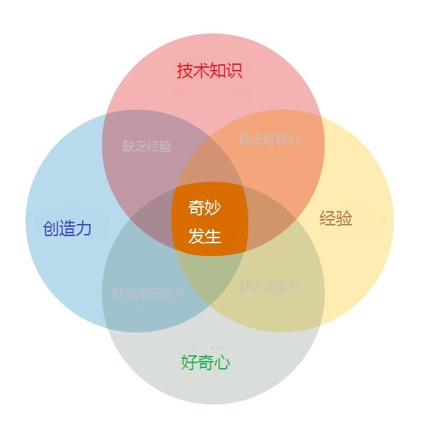

TheArtOfProgram
编程的艺术

本文译自Art of Programming的文章，出于学习交流和分享的目的，不用于任何商业用途，若有错误，恳请指出。
在很早之前，有一个对于编程很大的误解，这个想法就是认为编程活动纯粹是技术，具有完全精确地性质，就像数学和物理。计算机是精确的，但是编程不是，前者的结果来自机器，后者依然是一种人类活动。
编程需要很多的创造力，对抽象的概念，以及工具和技术，这些我们可能会在教室里学到，所有的理论仅仅是成为一个伟大的开发者的必要一小部分。
不是所有的开发者都在平等的创造
因为人是不同的性格，我们的动机、目标和挑战总是不同的。一开始，我只能讨论我的个人经验，并且我的动机和数学和准确科学绝对没有关系。
在13岁，我有了第一个编程经验，它是在学校的一节不同寻常的计算机课，在这里我们学会了怎么用clipper语言建立一些基本的东西，因为老师教累了Word、Excel以及其他的类似东西，对我而言，可以看到我们如何建立一些行代码而产生的实用性的东西，这是一个令人激动的经历。
有一个艺术家和一个工程师作为父母，我很小的时候就受到他们的影响，我很快意识到编程结合了这两个世界（艺术与工程）最好的东西，它是建立在逻辑上的艺术。
始于那时，无中生有和用代码将想法转化为现实的能力成为我编程的强大动力。
编程如同艺术
我认为编程来自艺术，但是你知道：艺术不都是相同的，如同画家，有很多程序员只是复制东西，从未想出原创的东西。
天才艺术家是不同的，他们创造新的东西，他们为未来设定新标准，他们为了做到更好改变了当前环境。他们不担心批评。那些“复制机”会尝试打倒他们，那些人会说：如果你可以使用X或Y，为什么要创造新的东西？
因为这些天才不满意X或者Y，因为他们想要尝试自己拿起工具去做实验，他们想要去创造，他们想要去发布他们自己的代码，因为他们想要自由的做些事情，即使那不是改变世界的大东西。
“最有创造力的人愿意工作在不确定的阴影里，” — from Creativity, Inc. by EdCatmull
尊重他人的工作成果，即使你认为一些类似的东西已经存在，那是他的经验，他们不是在重造轮子，他们只是在尝试建立更好的轮子，或者在建立一个让他们为个人目的更好工作的轮子。
这就是来到生活中的奇妙事情。
原文链接